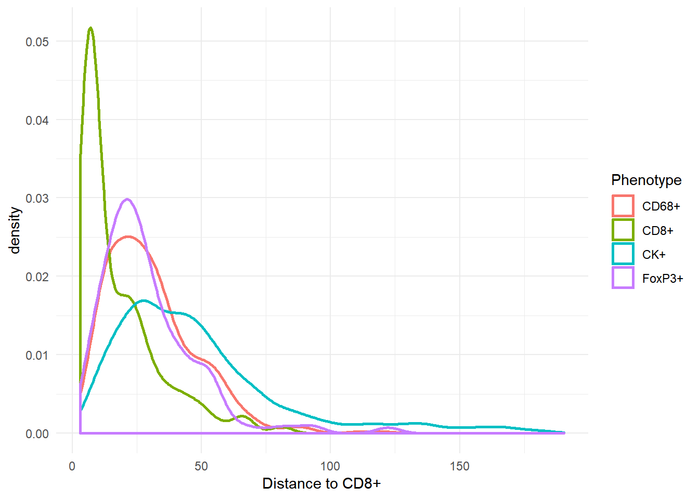

phenoptr contains several functions which analyze and report on the spatial relationship between cells in a single field.
find_nearest_distance
The find_nearest_distance function finds per-cell nearest neighbor distances. For each cell in a sample, it finds the distances to the nearest neighbor cells in each of the provided phenotypes. The distances are returned in a data_frame with one column per phenotype.
For example, the phenoptr sample data sample_cell_seg_data contains 5 unique phenotypes:
library(tidyverse)
library(phenoptr)
csd <- sample_cell_seg_data
csd %>% count(Phenotype)# A tibble: 5 x 2
Phenotype n
<chr> <int>
1 CD68+ 417
2 CD8+ 228
3 CK+ 2257
4 FoxP3+ 228
5 other 2942The other cells are not of interest, so first filter them out.
csd <- csd %>% filter(Phenotype!='other')Calling find_nearest_distance on this file returns a data_frame with four columns and one row for each cell:
distances <- find_nearest_distance(csd)
glimpse(distances)Observations: 3,130
Variables: 4
$ Distance to CD68+ <dbl> 29.529646, 38.082148, 36.674242, 73.119765,...
$ Distance to CD8+ <dbl> 18.03469, 64.37585, 67.57403, 91.44397, 37....
$ Distance to CK+ <dbl> 36.830694, 109.317199, 3.605551, 4.031129, ...
$ Distance to FoxP3+ <dbl> 16.347783, 40.140379, 30.870698, 65.408333,...nrow(csd)[1] 3130To create a combined data frame, use dplyr::bind_cols.
csd_with_distance <- bind_cols(csd, distances)Note: Cell positions in a cell seg data file are relative to the top-left corner of the field, so calling find_nearest_distance on a merged data file will compute incorrect values. One way to add distance columns to a merged data file is to use dplyr::group_by to process each field separately. For example, if merged contains merged cell seg data, add distance columns with this code:
merged_with_distance <- merged %>%
dplyr::group_by(`Sample Name`) %>%
dplyr::do(dplyr::bind_cols(., find_nearest_distance(.)))Once the nearest neighbors have been computed per cell, standard aggregation, analysis and plotting commands can be used to examine the results. For example, find the mean nearest neighbor distances by phenotype:
csd_with_distance %>% group_by(Phenotype) %>%
select(starts_with('Distance to')) %>%
summarize_all(~round(mean(.), 1))# A tibble: 4 x 5
Phenotype `Distance to CD68+` `Distance to CD8+` `Distance to CK+`
<chr> <dbl> <dbl> <dbl>
1 CD68+ 14.2 30.6 23.1
2 CD8+ 23.1 17.5 19.3
3 CK+ 44.3 48.2 7.9
4 FoxP3+ 19.1 29.1 23.3
# ... with 1 more variables: `Distance to FoxP3+` <dbl>Show the distribution of distances in a density plot:
ggplot(csd_with_distance, aes(`Distance to CD8+`, color=Phenotype)) +
geom_density(size=1) + theme_minimal()
count_within
The count_within function looks at the number of cells within a radius of another cell and returns summary measures. For example, use count_within to find the number of CD68+ cells having a CK+ cell within 25 microns:
count_within(csd, from='CD68+', to='CK+', radius=25)# A tibble: 1 x 5
radius from_count to_count from_with within_mean
<dbl> <int> <int> <int> <dbl>
1 25 417 2257 274 3.278177In this result, from_count and to_count are the total numbers of eligible cells. They agree with the counts in the first table in this vignette. from_with is the number of CD68+ cells having at least one CK+ cell within 25 micron. within_mean is the average number of CK+ cells found within 25 micron of each CD68+ cell.
Note there are some subtleties to count_within. Most importantly, it is not symmetric. In this example, the number of CK+ cells with a CD68+ within 25 microns is not the same as the number of CD68+ cells with a CK+ cell within 25 microns.
count_within(csd, from='CK+', to='CD68+', radius=25)# A tibble: 1 x 5
radius from_count to_count from_with within_mean
<dbl> <int> <int> <int> <dbl>
1 25 2257 417 664 0.6056712Please see help(count_within) for details.
count_within_batch
You may want to run count_within on an entire directory of cell seg data files, or to count multiple combinations of phenotypes. Both of these are possible using count_within_batch. This function takes the path to a directory that contains multiple cell seg data files. The pairs and category parameters are lists and may contain multiple entries.
For example, the following commands will count FoxP3+ cells with a CD8+ or CK+ cell within 10 or 25 microns. Separate counts are returned for each to phenotype and for Tumor and Stroma tissue categories. Counts will be calculated for all cell_seg_data.txt files in my_directory.
base_path <- "/path/to/my_directory"
pairs <- list(c('FoxP3+', 'CD8+'),
c('FoxP3+', 'CK+'))
radii <- c(10, 25)
categories <- c('Stroma', 'Tumor')
count_within_batch(base_path, pairs, radii, categories)See help(count_within_batch) and the vignette Selecting cells within a cell segmentation table for additional details.
The spatial_distribution_report function is a bit different from the other functions mentioned in this vignette. Rather than calculate and return distance metrics, it creates a report which shows visually the nearest neighbor relations between two phenotypes in a single field. Because the result is a stand-alone HTML file, it can’t easily be demonstrated in a vignette. For an example, copy and paste this code into your own copy of R. It will create a sample report in your user directory.
cell_seg_path <- sample_cell_seg_path()
pairs <- list(c('CD68+', 'CD8+'))
colors <- c('CD68+'='magenta', 'CD8+'='yellow')
out_path <- path.expand('~/spatial_distribution_report.html')
spatial_distribution_report(cell_seg_path, pairs, colors, output_path=out_path)To create reports for all cell seg data files in a directory, first define phenotypes and colors as above. Use list_cell_seg_files to find all the files. Then call spatial_distribution_report for each file. This will create reports in the same directory as the data files.
base_path <- '/path/to/data/'
paths <- list_cell_seg_files(base_path)
for (path in paths)
spatial_distribution_report(path, pairs, colors)